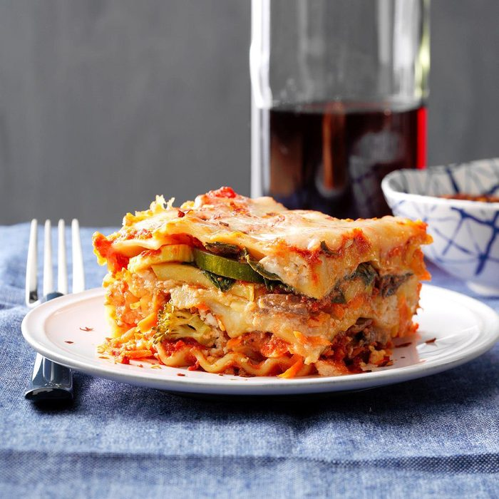

Lasagna

Lasagna is a popular Italian dish among many and considered
to be a staple at family gatherings.
Lasagne originated in Italy during the Middle Ages.
The oldest transcribed text about lasagne appears in 1282 in the Memoriali Bolognesi
("Bolognesi Memorials"), in which lasagne was mentioned in a poem
transcribed by a Bolognese notary.
Ingredients
- pasta
- heavy cream
- ricotta cheese
- tomato sauce
Steps to Prepare
- Boil pasta to al dente
- Layer with cheese and sauce once ready
- bake in oven on high for five minutes
- serve